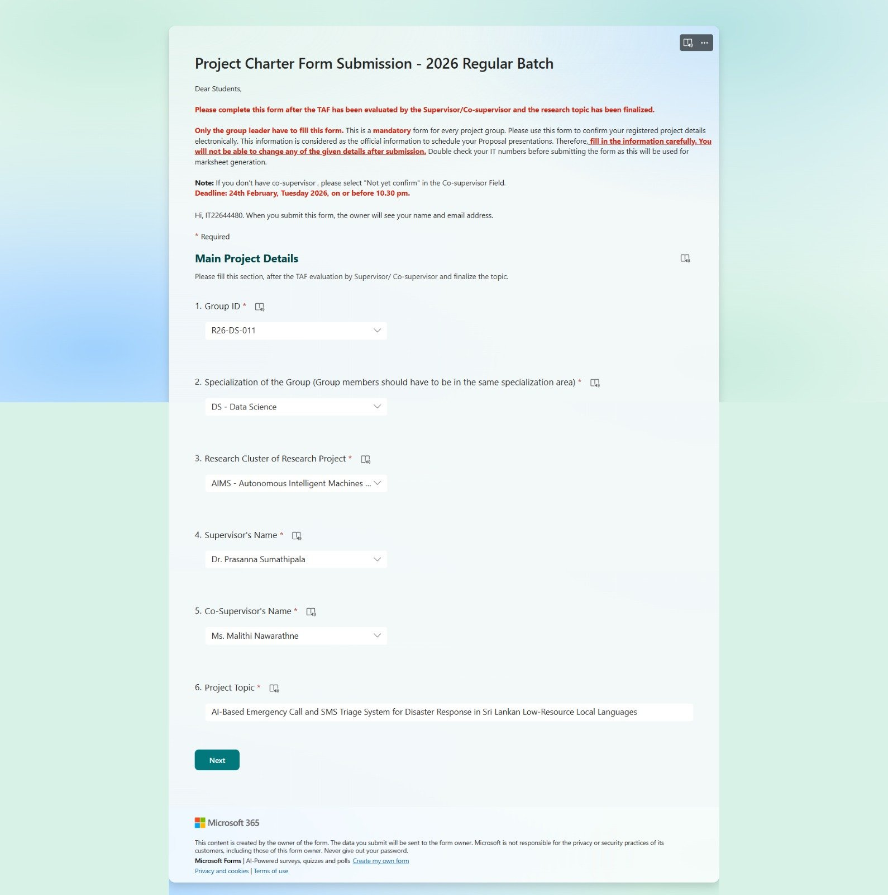

Low-resource, code-mixed language
Speech and text models are trained mostly on English. Sinhala, Tamil, Singlish and Tanglish emergency speech and SMS are barely covered.
SLIIT Research Project · IT4010 · 2026
From a panicked phone call or a broken SMS to one verified, prioritised incident — in සිංහල, தமிழ், English, Singlish and Tanglish.
වතුර ගෙදර ඇතුළට එනවා, උදව් කරන්න!
தண்ணீர் வீட்டுக்குள் வருகிறது, உதவி வேண்டும்!
gedara wathure yata wela, api 4 denek innawa
INC-0142 · Fused incident
Flood · Kegalle
3 reports merged · Call + SMS · ready for dispatch
During floods, landslides and fires, people in Sri Lanka report emergencies by phone call and SMS, in Sinhala, Tamil, English, or a mix of them. Operators at the Disaster Management Centre (DMC) have to understand panicked, multilingual speech, judge how urgent each report really is, and notice when several people are reporting the same incident in completely different words. Today none of these three judgements is automated.
This project builds one integrated AI pipeline that does all three. A multilingual conversational agent asks the caller the right follow-up questions, an urgency model reads both the voice and the words, an SMS engine turns noisy text messages into structured reports, and an incident fusion engine merges every report about the same event into one verified incident on a live operator dashboard.
Domain
Research on emergency and crisis communication has mostly processed messages from a single channel, usually English social-media posts, and has treated classification, information extraction and de-duplication as separate tasks [1]. Sri Lankan emergency reporting is different: reports arrive at the same time by voice and SMS, in Sinhala, Tamil and English, and very often in romanised, code-mixed forms such as Singlish and Tanglish.
Multilingual pre-trained models make low-resource languages more reachable. XLM-RoBERTa [2] transfers to new languages with little labelled data, LaBSE [3] maps sentences from different languages into one embedding space, mT5 [4] gives a multilingual text-to-text generator, and mDeBERTaV3 [5] is a strong multilingual encoder for inference tasks. Whisper [6] brings multilingual speech recognition, but its accuracy drops on low-resource languages, noisy telephone audio and code-mixed speech, which is exactly the setting of an emergency hotline.
Urgency in a call is carried not only by words but by the voice. Standard acoustic parameter sets such as GeMAPS [7] (pitch, jitter, energy, speaking rate) are well studied for emotion and stress recognition, yet emergency-call triage systems still rely mainly on the transcript. On the operational side, the Medical Priority Dispatch System (MPDS) [8] is the established protocol for remote triage from a reported description, which suits SMS and phone triage better than field protocols that need physical assessment.
Large language models make extraction from messy text possible, but they can invent facts that were never said [9], a serious risk when the output decides who is rescued first. Finally, deciding whether two reports describe the same incident is a form of event coreference, normally evaluated with B-cubed precision and recall [10]; existing work matches reports within one source and one language, not across calls and SMS in several languages.
Existing emergency-AI work handles the pieces in isolation: urgency detection alone, or single-channel intake alone. There is still no integrated approach that combines multilingual voice and SMS intake with cross-source de-duplication for low-resource disaster response.
Speech and text models are trained mostly on English. Sinhala, Tamil, Singlish and Tanglish emergency speech and SMS are barely covered.
Call triage relies on the transcript. Vocal stress is ignored, even though it survives when speech recognition fails.
Voice and SMS reports are processed separately, with no shared report format and no safe use of LLMs on noisy SMS.
Reports are matched within one source and one language. Many callers describing one incident in different words are not fused.
How can multilingual emergency calls and SMS in Sri Lanka's low-resource local languages be understood, prioritised by urgency, and fused into verified incidents automatically, so that operators can dispatch faster without duplicate or missed responses?
During disasters such as floods and fires, emergency reports arrive through calls and SMS in Sinhala, Tamil and English, and multiple people may report the same incident in completely different words. Each operator must:
Pain point: none of these three judgements is automated today. This can lead to duplicate dispatches for the same incident, or a critical call receiving the same attention as a routine one.
1 incident → 3 uncoordinated reports
To design, build and validate an integrated AI triage system that turns multilingual emergency calls and SMS into prioritised, de-duplicated and verified incident records for disaster response in Sri Lanka.
Turn multilingual emergency calls into dispatch-ready reports by asking one missing item at a time, with an explicit affect- and uncertainty-aware clarification policy that is auditable and bounded.
Classify caller urgency from voice and text, validated honestly on real government disaster calls, not only simulated data.
Extract incident type, location, people count and resources needed from noisy SMS in six language styles, with safety nets against hallucination and priority assigned by the MPDS dispatch standard.
Decide, report by report, whether a new emergency call or SMS belongs to an open incident, with a calibrated probability, a cost-aware MERGE / SEPARATE decision and an auditable evidence trail on a live operator dashboard.
Four components run as one live pipeline. Calls and SMS are turned into the same structured report format, scored for urgency, and fused into incidents shown on the operator dashboard.
Result: question diversity 0.040 → 0.222 with a 100% safety pass rate; critically incomplete reports 91.4% → 74.1%; reply in the caller's language 41% → 100%.
Why it is hard. Callers speak Sinhala, Tamil, English or a mix, often while frightened, and give incomplete or uncertain information. Fixed question templates ask the same thing again and again, handle spoken numbers poorly (such as a house number said as Sinhala words), and cannot manage social or off-topic calls safely.
Research questions.
Data. 510 simulated multilingual emergency calls (502 call files compared with a fixed-template baseline), plus curated gold sets and regression tests for each part.
| Entity extraction F1 | 0.278 (BiLSTM-CRF) → 0.429 (fine-tuned XLM-R) |
|---|---|
| Relevance F1 | 0.783 → 0.819 |
| Question diversity | 0.040 → 0.222, 100% safety pass rate |
| Critically incomplete reports | 91.4% → 74.1% |
| Off-topic router | 90.4% accuracy; no false information reply in 30 social calls |
| Numerals / address / triage | 19 of 19 / 10 of 10 / 18 of 20 correct |
| Reply in the caller's language | 41.0% → 100% |
Limitations. The gold sets are small and were written by the author, so independent annotation is still needed. Question diversity is a proxy for quality, not an expert rating, and the upstream entity model (F1 0.43) limits location and people recall.
Result: on real DMC calls the final late-fusion model gave the strongest High-urgency recall (46.1%); 67.3% accuracy on fire / flood calls that match the training scope.
Why it is hard. A caller in a life-threatening situation and one asking a routine question can use almost the same words but sound completely different. Labelled emergency speech in Sinhala and Tamil is scarce, and a model that looks good on simulated calls may not hold up on real telephone audio.
Research questions.
Data. 267 role-played fire and flood calls (High 130 / Medium 82 / Low 55, two annotators) for development, and 59 authentic DMC recordings from the 2025 floods and landslides for independent evaluation.
| Simulated corpus (5-fold CV) | acoustic 0.618 · text 0.397 · early fusion 0.630 · late fusion 0.613 |
|---|---|
| Real DMC calls, early fusion | 0.326, close to the majority-class baseline (0.187) |
| Real DMC calls, text-only | 0.449 (rose from 0.397 on simulated calls) |
| Final late fusion, all 59 DMC calls | 43.7% accuracy · 0.428 · High-urgency recall 46.1% |
| Final late fusion, 11 fire / flood calls | 67.3% accuracy · 0.630 · High-urgency recall 65.7% |
Key finding. Simulated-corpus results overstate real-world performance, and the best model in development (early fusion) was the wrong choice for authentic calls. A domain-shift analysis (Cohen’s d) shows the acoustic features shift far more between the corpora than the text features.
Limitations. Speech recognition on real telephone audio is the main remaining weakness, the fire / flood subset is only 11 calls, and the simulated corpus covers fire and flood scenarios only.
Result: 82.76% incident accuracy; hallucination detection F1 0.97; dangerous under-triage cut from 11 to 1 of 26 cases.
Why it is hard. Emergency SMS arrive in six overlapping language styles and are very noisy. Across the 864-message dataset, broken grammar affects 83.7% of messages, far more than spelling errors (37.2%) or code-mixing (40.4%). Hand-written rules and keyword lists could not keep up with this variation, while calling an LLM for everything is slow, costly and can invent facts.
Objectives.
Contributions. Noise Taxonomy · Adaptive Router · hallucination Risk Score · 500-example hallucination benchmark · cross-model verification · fatigue-aware question mode · distress detection · multilingual MPDS keywords with an LLM safety net that can only raise priority.
| Incident type (fine-tuned mT5-small) | 82.76% on 87 held-out messages |
|---|---|
| Adaptive Router | 58.3% fewer LLM calls (2,592 → 1,080) |
| Hallucination detection | NLI F1 0.97 vs content-word overlap 0.92 and embeddings 0.77 |
| MPDS on reworded messages | 57.7% → 73.1% with the LLM safety net |
| Dangerous under-triage | 11 → 1 of 26 cases |
| Distress detection | F1 1.00 on a 24-example benchmark |
Limitations. Location extraction is weak because only about 5% of messages name a real place. One reworded life-threat case is still under-triaged, and the Sinhala / Tamil keyword translations still need a native-speaker review.
Result: 0.9% false merges (merge precision 98.1%) on the test set; incident-level matching cut false splits from 24.0% to 10.7%.
Why it is hard. The same place can be written in different scripts (14 pansala para gampaha and 14 පන්සල පාර ගම්පල are one address), while two different emergencies can differ by a single house number on the same road. Merging two real emergencies can leave one without a response, so a false merge is treated as three times worse than a false split.
Research questions.
Nine steps. Input understanding → evidence pool → geography → time → semantic similarity (5A) and evidence matching (5B) → fusion → decision → incident record → revision and ambiguity flag.
Data. A purpose-built corpus of 535 multilingual call and SMS reports, split by incident (DEV 112 / TEST 115 reports), with hard “trap” pairs such as adjacent houses on the same road. Every setting was chosen on DEV with adoption rules written in advance; TEST was reported once.
| False merges | 0.9% of reports |
|---|---|
| Merge precision | 98.1% |
| Link recall | 70.7% (84.0% at 1.7% false merges without the no-location rule) |
| False splits, report vs incident matching | 24.0% → 10.7% |
| Google Places within 1 km | 53–58% for Sinhala / Tamil script vs 83% for Latin script |
| Reply time | about 4 s on a laptop CPU (20 s budget); no paid API needed at run time |
Limitations. Results come from a simulated corpus, not real hotline traffic, so they are development estimates. Evaluation sets are small, and a study with real dispatchers is the main future work.

Python

PyTorch

Hugging Face

scikit-learn
OpenAI (Whisper, GPT-4o-mini)

NumPy

SciPy

pandas

Jupyter

Google Colab

Flask

Pydantic
Twilio (Voice & SMS)

Google Places

Leaflet

Git

GitHub

pytest
Milestones
2026 Regular Batch timeline. Choose an assessment from the list to see its details.
Mar 2026
Proposal document submitted and presented in March to get the research topic, scope and plan approved.
Marks Allocated : TBCCompleted
May 2026
Check list and status documents 1 & 2 confirming each member's progress against the planned work, together with the research logbook. A final check list follows in October.
Marks Allocated : TBCCompleted
May 2026
Reviews about 50% completion of the project and reveals gaps or inconsistencies in the design and requirements.
Marks Allocated : TBCCompleted
Aug – Sep 2026
Reviews about 90% completion with a live demonstration of the integrated system: a multilingual call, clarification, urgency scoring and automatic fusion with an SMS report on the operator console.
Marks Allocated : TBCCompleted
Oct 2026
Draft and final thesis submissions in October, covering the group and individual contributions.
Marks Allocated : TBCUpcoming
Oct 2026
Website submission and website evaluation in October. The website promotes the project and gives access to all its documents.
Marks Allocated : TBCUpcoming
Oct 2026
Final presentation of the completed system and an individual viva assessing each member's contribution.
Marks Allocated : TBCUpcoming
Oct – Dec 2026
Research paper submission in October, and evidence of publication submitted in December.
Marks Allocated : TBCUpcoming
Documents
Submitted · Feb 2026

Submitted · Mar 2026
Submitted · Oct 2026
Due Oct 2026
Due Oct 2026
Due Oct 2026
Due Oct 2026
Presentations
Presented · Mar 2026
Presented · May 2026
Presented · Aug – Sep 2026
Oct 2026
Yet to be presentedAbout Us
Supervisor
Sri Lanka Institute of Information Technology
prasanna.s@sliit.lkCo-Supervisor
Sri Lanka Institute of Information Technology
malithi.n@sliit.lkIT22129758
Department of Data Science
C1 Multilingual Emergency Conversational AI System for Rapid Clarification
IT22129758@my.sliit.lkIT22644480
Department of Data Science
C2 Multimodal Urgency Detection Using Prosodic and Conversational Cues
IT22644480@my.sliit.lkIT22263476
Department of Data Science
C3 Low-Bandwidth SMS Emergency Intelligence for Disaster Response
IT22263476@my.sliit.lkIT22504418
Department of Data Science
C4 Multi-Source Urgency-Based Incident Fusion, Unified Incident Records and Real-Time Operator Dashboard
IT22504418@my.sliit.lkContact Us
Contact Details
For further queries please reach us at sahaya.researchteam@gmail.com
Hope this project helped you in some manner. Thank you!
-Team Sahaya